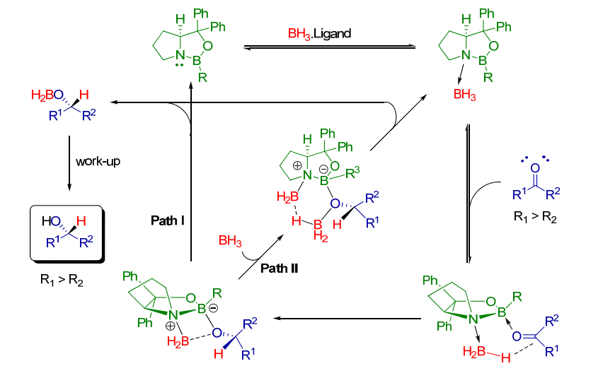
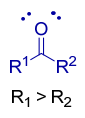
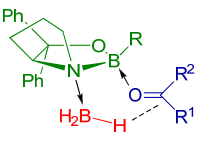
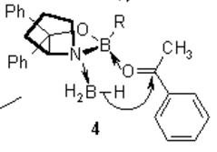
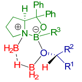

Q: Develop a tutorial for your classmates on the enantioselective CBS reduction of ketones.
A:
- The enantioselectivity, or the synthesis of a prefered enantiomer over the other, of CBS reduction reactions occurs when the ketone one substituent larger than the other. As seen to the right!
- When the right substituent is the larger substituent, the ketone will be reduced to an -OH on a dash.

- Why? ... Start with positioning!
- This step on the right is crucial in determining the product's stereochemistry. The CBS molecule is shown facing up, at eye level. The ketone is facing us, and positioned so that the larger group is pointed downwards where it is less sterically hindered.
- To the right is another illustration of the mechanism, with examples of substituents shown. As you can see, the phenyl (larger group) is pointed down.


- The attack!
- The boron group is coming out towards you, so it is in front of the ketone.
- Thus, the H can only attack from the front of the ketone.
- The result is the hydrogen on a wedge (coming out) and the oxygen group on a dash (going into the page).

- The remaining mechanism steps do not interfere with the central carbon's stereochemistry, so the oxygen group remains on a dash.